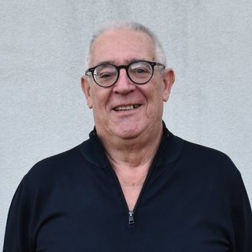

Fondazione Don Carlo Gnocchi is een Italiaanse stichting zonder winstoogmerk die al meer dan 70 jaar zorgt voor mensen met een beperking, ouderen en patiënten die revalidatie nodig hebben. Dat doet zij via een netwerk van centra in negen Italiaanse regio's. Het centrum in Florence is door het Italiaanse ministerie van Volksgezondheid erkend als Wetenschappelijk Instituut voor Onderzoek, Opname en Zorg (IRCCS) op het gebied van revalidatie. Het centrum heeft onderzoekslaboratoria, waaronder PROMISE@LAB en de afdeling Complexe Neuromotorische Revalidatie, die samen met de Universiteit van Florence wordt geleid.
Rol in INTEGRA
FDG coördineert het project en leidt het projectmanagement (WP1). FDG heeft het telerevalidatieplatform MAIA ontwikkeld en gecertificeerd, dat in de Italiaanse, Spaanse en Roemeense pilots wordt gebruikt. FDG leidt ook het opstellen van de systeemeisen, het protocol van de pilotstudie en de ethische goedkeuring, en het kader voor de effectmeting. Daarnaast voert FDG de Italiaanse pilot in een stedelijk gebied uit.
Team
 Francesca Cecchi Hoofdonderzoeker en projectcoördinator
Francesca Cecchi Hoofdonderzoeker en projectcoördinator Michele Piazzini Projectmanager
Michele Piazzini Projectmanager Maria Luigia del Vicario
Maria Luigia del Vicario Giulio Cherubini
Giulio Cherubini Virginia Ambrogi
Virginia Ambrogi
Marco Baccini